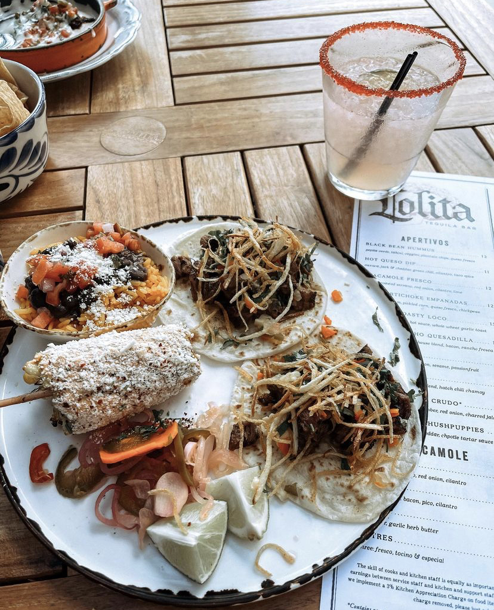
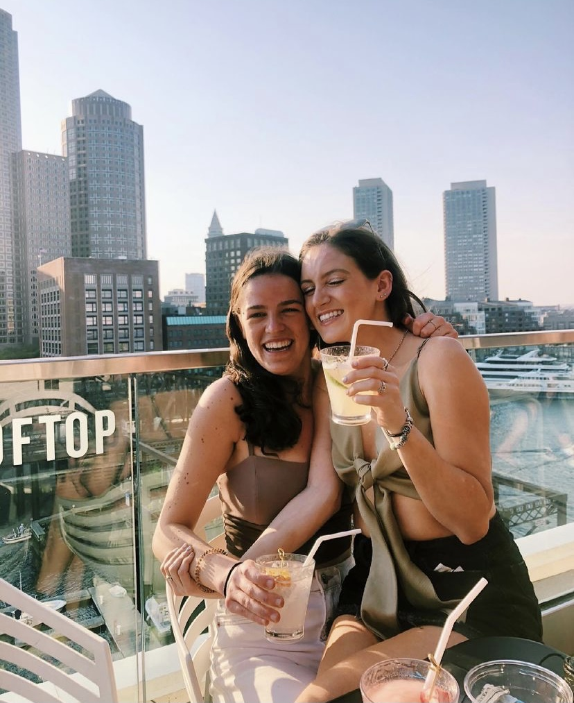
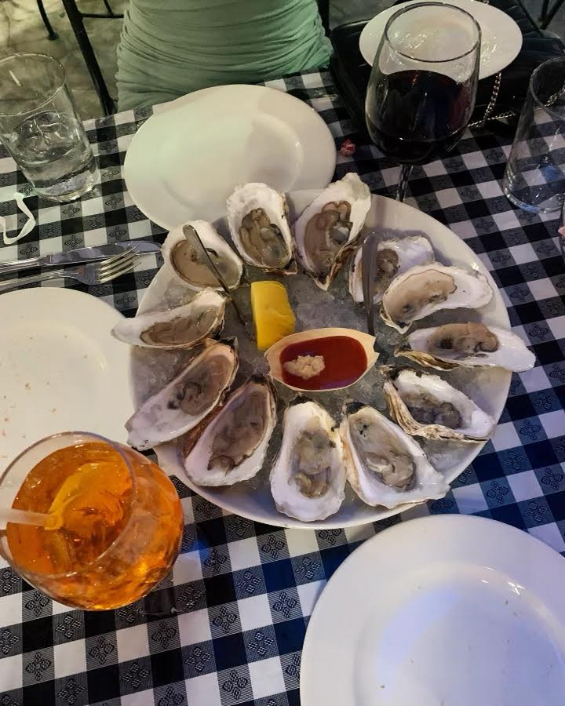

LOLITA FORT POINT
If you like Mexican food and waterfront views, you are in for a treat. The interior of Lolita has a gothic style to it with dark shades of red and black and is dimly lit. The walls also have faux stained-glass panels behind the bar, adding to the cool look of the place. This place is great for special events, birthdays, and a fun date night!While inside is dark and edgy, the outside patio is truly beautiful. Guests can enjoy lobster guacamole, street corn, and sip on their specialty margaritas
PRO TIP:
If it is summertime, sitting outside is a must. Not only are you by the water, but the atmousphere and stunning candles is delightful. However, if it's a cold winter or fall day, inside really has a vibe that is unique any other restauant I have been to!

LOOKOUT ROOFTOP AND PARA MARIA
This spectacular rooftop bar offers small bites and cocktails, but most importantly, Lookout has views of the harbor-front skylines. I went here for my past birthday, and my friends and I were both blown away from the scenic view. In the winter, guests can reserve heated igloos to keep them warm, while offering up the city skyline. If you make your way downstairs, the chef of Para Maria is a two-time champion on the cooking TV show Chopped, and it shows. From the chipotle portobello tacos to the fresh ceviche, these small plates will be a hit.
PRO TIP!
Especially in the warmer days, Lookout is very booked- Though I have gotten in without a reservation, I highly suggest if you choose to come on a weekend you head online and make a reservation before!

BARKING CRAB!
If you’re looking for good New England seafood and a casual spot, this is the restaurant for you. The seafood could not be more fresh, as Barking Crab is propped up right by the seaport, offering up stunning ocean views. Under the red and yellow striped tent, there are open air picnic tables and a wood burning stove inside. Foodies can enjoy delish clambakes, lobster rolls, and crab claws with warm butter. This spot has been a favorite since it opened in 1994, and the vibrant atmosphere and live music keeps people coming back for me.
PRO TIP:
Especially in the summers, this place fills up. While you wait for your table I reccomend you head directly across the street to Yotel Deck 12, to sip on a cocktail as you wait. Get there early, because Barking Crab is a place you can stay all night! Enjoy the live music, some oysters, and enjoy the views- this place is extroadinary!